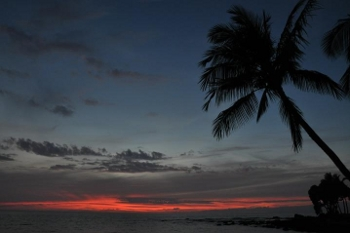
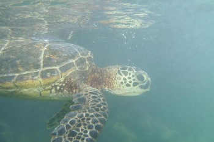
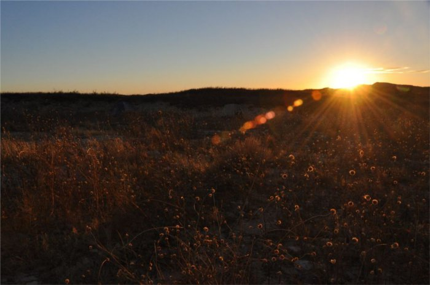

Photos
The following albums are from trips for both research and pleasure.
Please contact me if you are interested in using these for public display, or if you wish to obtain high resolution files or prints.
Hawaii 2010


Terrestrial
Underwater
Mescalaro Sands, NM January 2011
